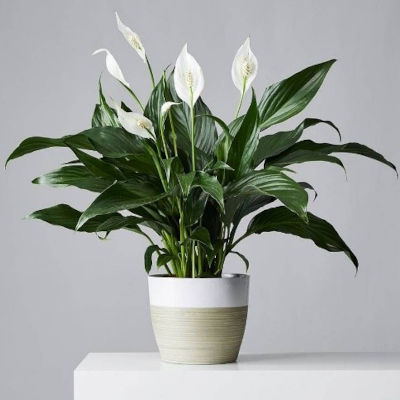
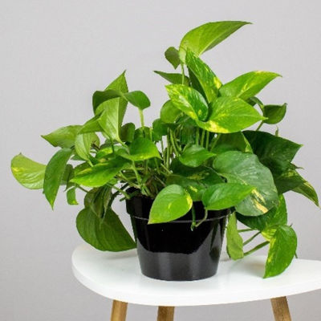

Plant Care Tips

Peace Lily
- Do not overwater
- Fertilize one or twice a year
- Divide or separate plant when grown too big

Golden Pothos
- No direct sunlight
- Check soil moisture before watering
- Water every 1-2 weeks

Hoya
- Never cut the long tendrils
- Keep potted in planters with drainage
- Fertilize throughtout spring and summer
Succulent
- Atleast 6 hours of sunlight per day
- More water required during spring and summer
- Choose a container with drainage
Philodendron
- medium inderect sunlight required
- Water every 1-2 weeks
- Average home temperature of 65°F-75°F

Ivy
- Use all-purpose potting soil
- Fertilize once every month
- Use a pot with drainage

Dracaena
- Filtered indoor light such as curtain
- Keep them hydrated by misting the leaves
- Use purified water when caring for this plant
Sansevieria
- Do not overwater
- Fertilize twice a year
- Keep in temperature of 55-85 degrees

Cactus
- More light required then normal plants
- Water when soil is dry
- Use soil mix with sand and rocks